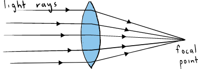

Introduction
- A lens is conventionally defined as a piece of glass which is used to focus or change the direction of a beam of light passing through it.
- They are mainly made of glass or plastic.
- Lenses are used in making spectacles, cameras, cinema projectors, microscopes and telescopes.
